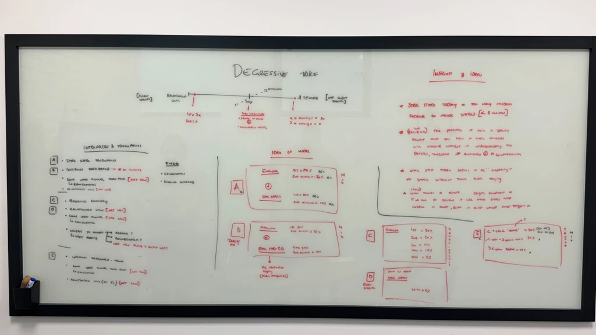
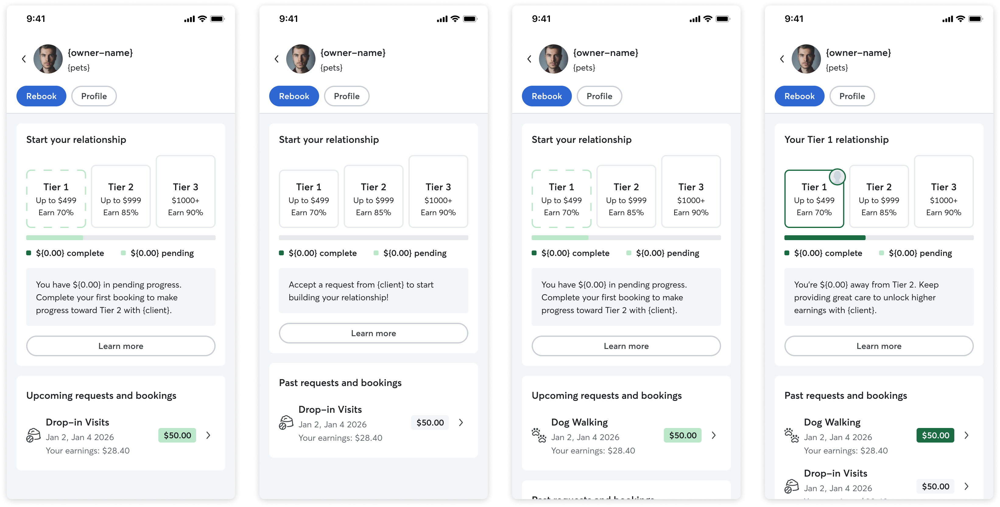

Rover · 2025 · Strategy · In Flight
Relationship
Graduated Fees
~40% higher take · 23% take-per-relationship target
Today, Rover charges the same fee on a sitter's first booking with a new client as on their 20th booking with a long-term trusted relationship. Frustration about fees is a core driver of diversion.
Internal analysis: capturing repeat-relationship diversion could make Rover's take ~40% higher. The provider strategy targets ~23% take-per-relationship growth. A flat fee doesn't map to that reality.
Model evaluation matrix — 3 models (new vs. repeat / relationship-based GBV / account-based GBV) compared across 5 dimensions (comprehension, fairness, gaming risk, revenue impact, segment impact). Shows the framework that selected relationship-based as the test model.
We assessed three possible models along: comprehension, fairness, gaming risk, revenue impact, and segment impact on top sitters who drive ~75% of earnings.
Relationship-based was the best match to sitter mental models. They think per client, not per year. Testing relationship-based GBV first in Canada as a proxy for the US market.


Higher fee on the first slice of relationship GBV (e.g. 28–35%), lower fee once the relationship hits a milestone (e.g. 10–15% after $X). Each owner–sitter pair has its own progress; once unlocked, the lower tier is permanent.
Sitters currently can't see GBV per client. A multistep GBV model is complex. A dedicated Relationship page is necessary — GBV progress tracker, fee tier, transaction history per client.
MVP Relationship page: GBV progress bar (current value vs. milestone threshold), current fee tier badge, locked next-tier preview, per-client transaction history. Makes an abstract fee model tangible.

Model mechanics comprehension: sitters struggled with cumulative GBV, milestones, permanent reductions. We leaned on progressive disclosure and anchored everything around "this relationship with this client."
Sense of agency: some milestones depended on owner behaviour. We focused UI on actions sitters control and avoided over-promising.
COMPREHENSION
High comprehension and perceived fairness among top sitters in Canada.
DIVERSION
No material increase in diversion on new relationships despite higher upfront fees.
REPEAT BOOKINGS
Improved on-platform repeat bookings for eligible relationships, 90-day window.
GBV GROWTH
Per-relationship GBV growth vs. control. Clean signal → broader rollout.